実況・配信ガイドラインと素材
水槽の魚をタップするとエサを食べて、ぷくっと膨らみます。膨らんだ魚に同じ魚が触れると合体して、ひとつ大きな魚に。 ふぐからクジラまで10種。目標は、1ゲームでクジラを何匹つくれるか。
App Store で見るハッシュタグは #ぷくぱく をお使いいただけると、開発者が見つけて喜びます。
| タイトル | ぷくぱく（英語名 PukuPaku） |
|---|---|
| ジャンル | 魚を膨らませて合体させるパズル（落ちものマージパズル） |
| 一行で | 魚にエサをあげて、ぷくっと膨らませて、合体で育てる。目標はクジラ。 |
| 対応 | iPhone（iOS 15 以降）。日本語・英語 |
| 価格 | 無料。広告あり。「広告を消す」買い切り ¥300 |
| アカウント | 登録なし。オンラインランキングは任意参加 |
| 公開 | 2026年9月（App Store） |
| 開発 | Mitsuaki Goto（個人開発） |
| 連絡先 | support.kumaogoto@gmail.com |
下の画像・文章は、記事・動画・配信のサムネイルなどでの使用を許諾します。加工（トリミング、文字入れ）も構いません。
スクリーンショット（日本語、1320×2868 PNG）
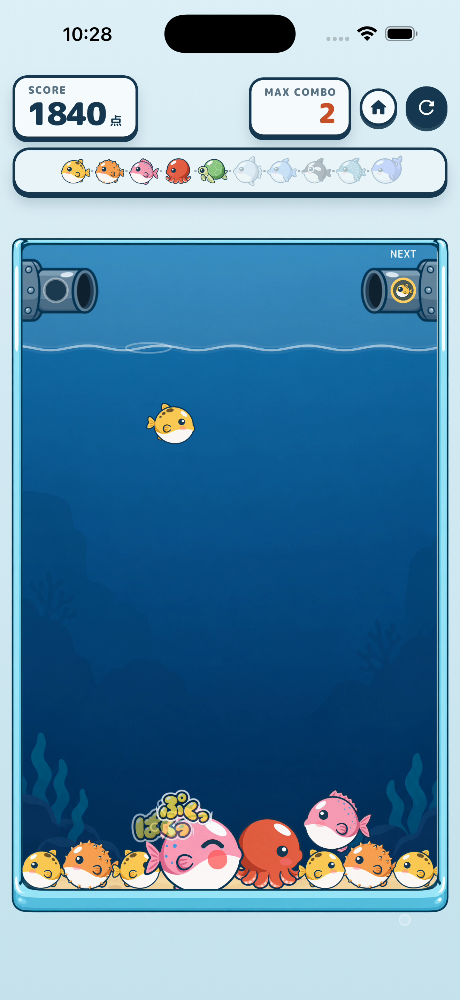
ぷくっ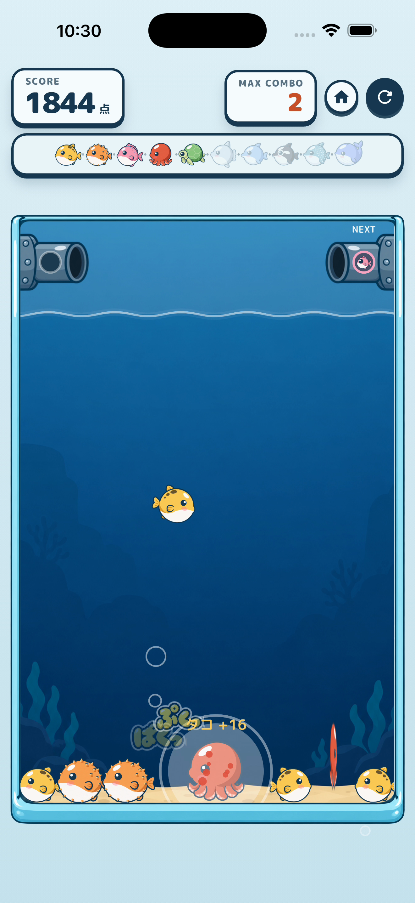
合体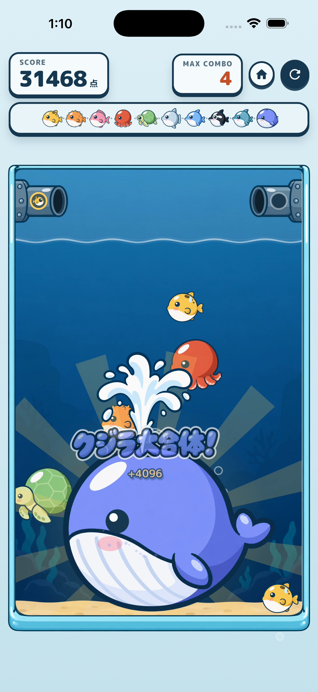
クジラ大合体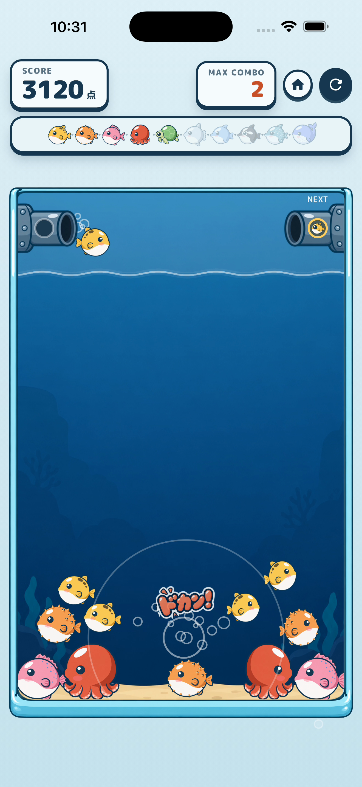
ドカン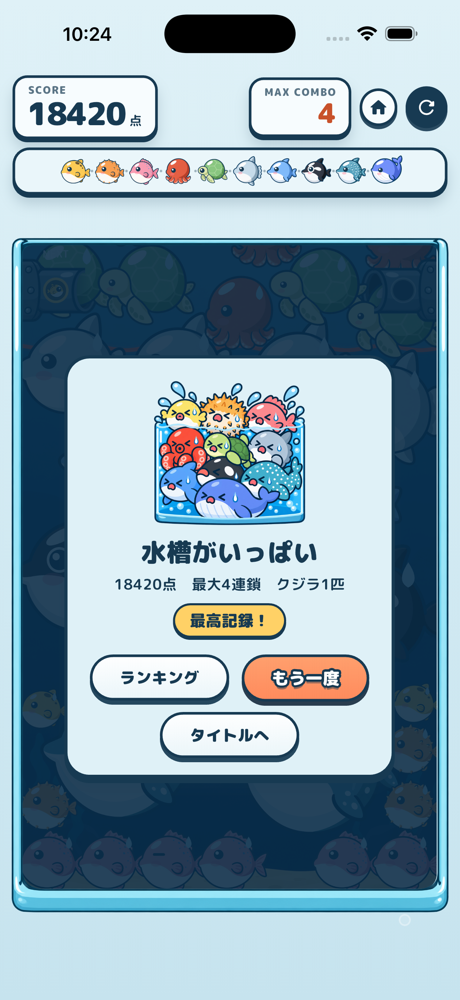
結果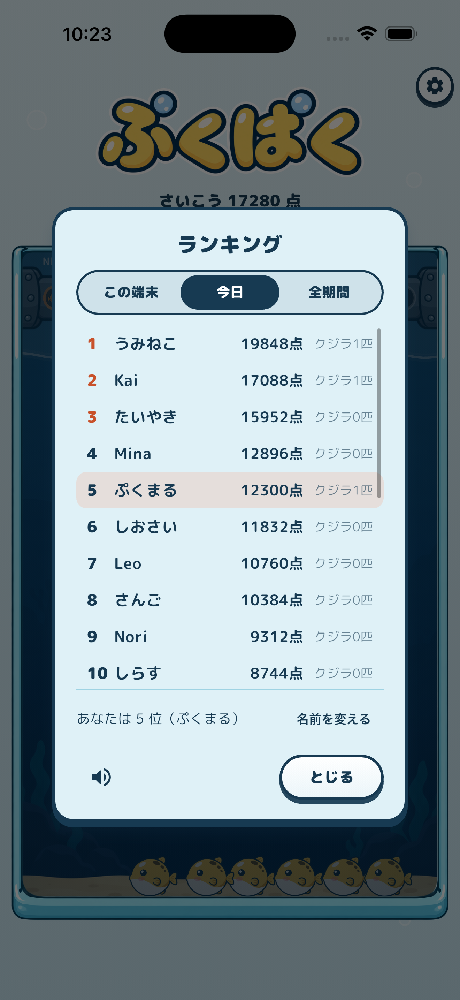
ランキング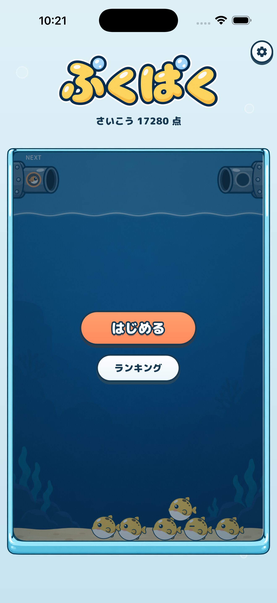
タイトル 進化の輪英語版は English の節に。
アイコンとキービジュアル
動画
縦 10 秒（SNS 用）と横 30 秒（記事の埋め込み用）を準備中です。できしだいここに置きます。
取材、素材の追加のご要望は support.kumaogoto@gmail.com まで。
Streaming guidelines & press kit
Tap a fish in the tank and it eats, then puffs up. When a puffed fish touches another of the same kind, they merge into a bigger one. Ten species from puffer to whale. The goal: how many whales can you make in one game?
View on the App StoreTag #pukupaku if you like. The developer reads it.
| Title | PukuPaku (ぷくぱく in Japanese) |
|---|---|
| Genre | Feed-puff-merge fish puzzle (a merge puzzle you play by tapping) |
| One line | Feed the fish, watch them puff, merge them into a whale. |
| Platform | iPhone (iOS 15 or later). English and Japanese |
| Price | Free with ads. One-time "Remove ads" purchase (¥300 in Japan; the App Store sets the local price elsewhere) |
| Account | None. The online ranking is optional |
| Release | September 2026 (App Store) |
| Developer | Mitsuaki Goto (solo developer, Japan) |
| Contact | support.kumaogoto@gmail.com |
You may use the images and text on this page in articles, videos, and thumbnails, including cropped or captioned versions.
Screenshots (English, 1320×2868 PNG)
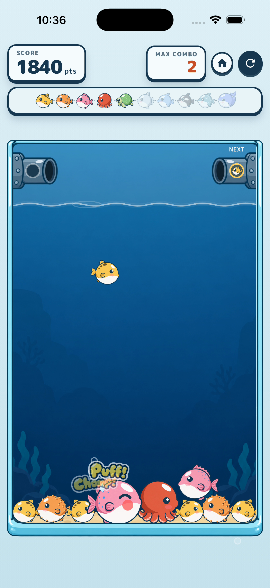
Puff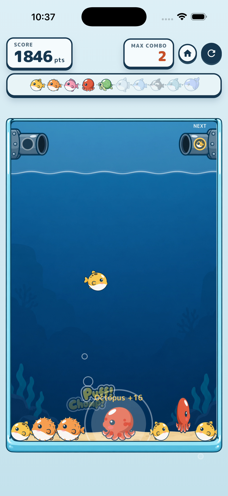
Merge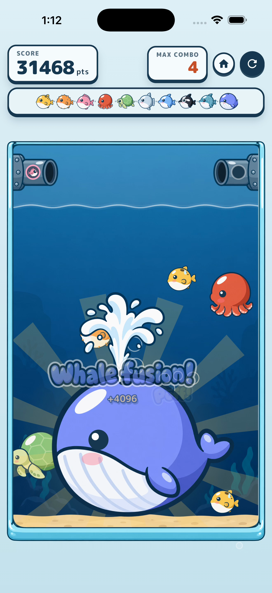
Whale fusion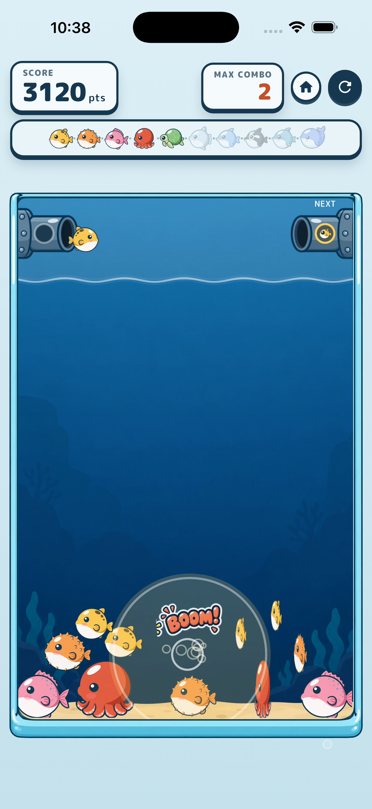
Blast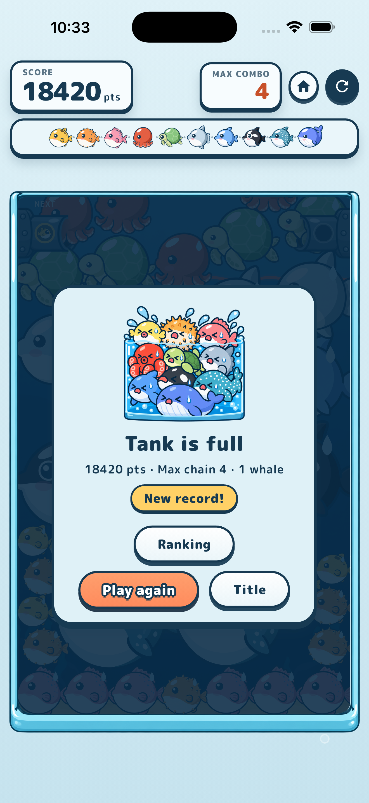
Result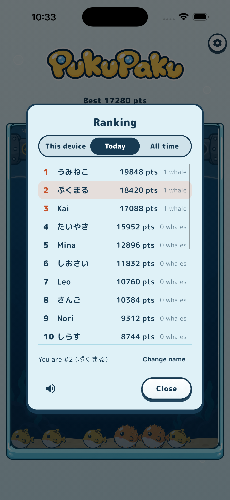
Ranking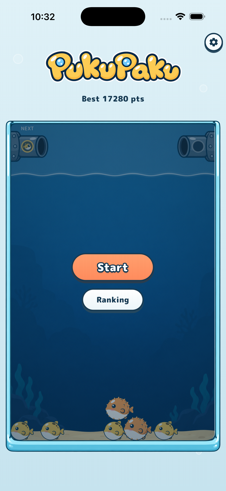
Title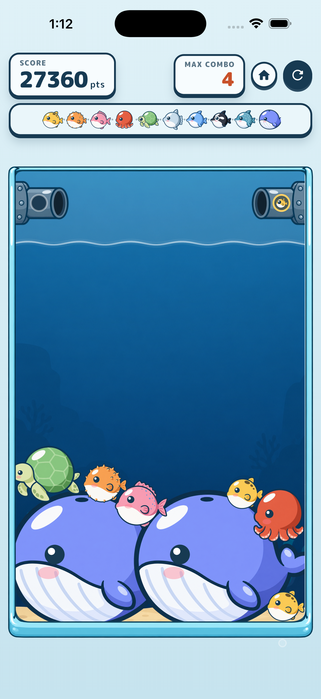
EvolutionIcon and key art
Video
A 10-second vertical clip and a 30-second landscape clip are in preparation and will be posted here.
Press inquiries and asset requests: support.kumaogoto@gmail.com
{kind=link}
{kind=link}
{kind=link}
{kind=link}
{kind=link}
{kind=link}
{kind=link}
{kind=link}
{kind=link}
{kind=link}
{kind=link}
{kind=link}
{kind=link}
{kind=link}
{kind=link}
{kind=link}
{kind=link}
{kind=link}
{kind=link}